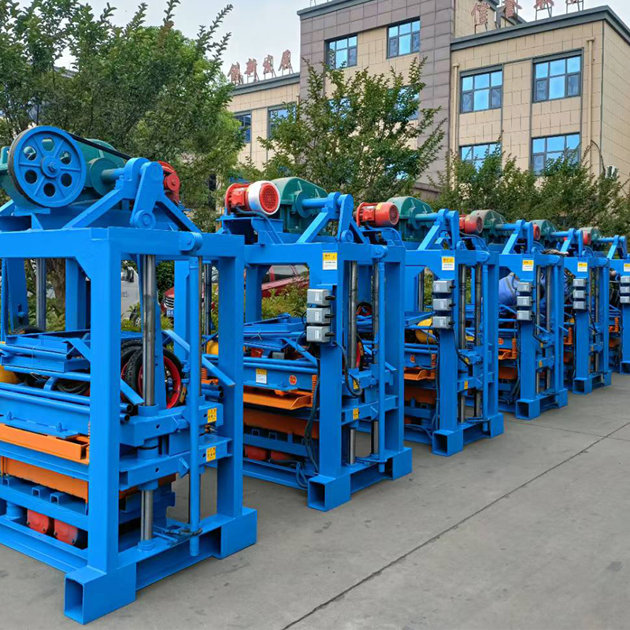

Bestseller · Entrée de Gamme
QT4-40 Pondeuse Parpaing Semi-Automatique
La machine à brique la plus abordable de notre gamme, point d'entrée idéal pour les nouveaux briquetiers africains. Alimentation manuelle, vibration électrique, empilage manuel.
- 2 800 – 4 000 blocs par poste de 8 heures
- Parpaing, plein, hourdis & pavé autobloquant
- Parfait pour une première briqueterie